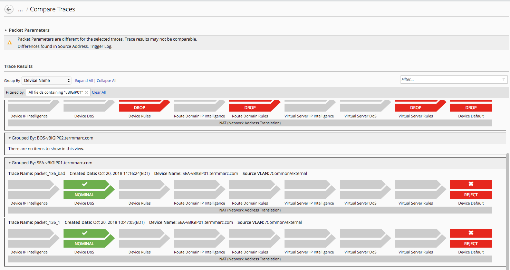
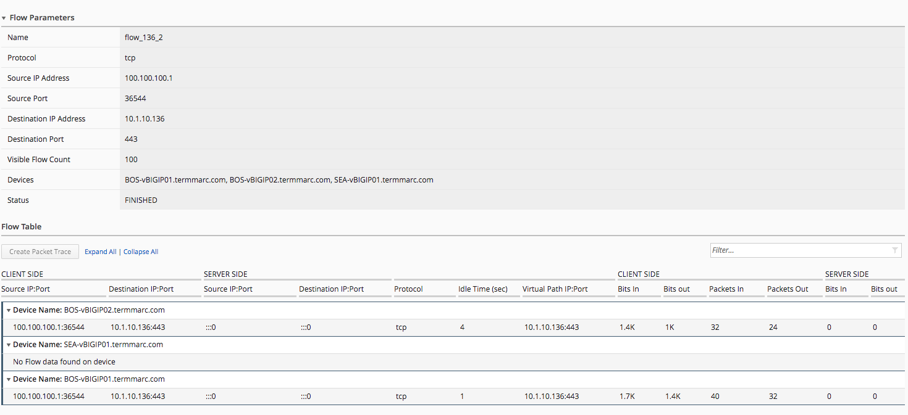

F5 BIG-IQ & Cloud Edition Lab > Class 7: BIG-IQ Application Firewall Manager (AFM) > Module 2: Network Tools and Logs Source | Edit on
Lab 2.2: Using BIG-IQ Multi-Device Packet and Flow Tracers to test AFM policy¶
In this lab, we will use the BIG-IQ Multi-Device Packet tracer and flow analyzers to test firewall policy.
Lab 2.2.1: Create and Run a Multi-Device Packet Test On BIG-IQ:¶
All AFM devices have the ability to test packets through the collection of AFM firewall, dos, and IP intelligence policies to test and troubleshoot a given packet against enforced/staged policies. BIG-IQ extends this functionality, allowing a security administrator to test a given packet against multiple AFM devices simultaneously. In this exercise., we will configure a packet test against multiple devices.
Under Monitoring > Security > Network Security, click Packet Traces
Click the Create button in the Packet Traces list
Edit the Packet Parameters as follows: - Name:
packet_136_1- Source IP Address:100.100.100.1- Source Port:36544- TTL: 255 - Destination Ip Address:10.1.10.136- Destination Port:443- Use Staged Policy:No- Trigger Log:NoIn Devices section, click Add, the move all available devices to the Selected box.
Set Source VLAN to
externaland leave the “Apply these VLANS to all Devices” box checkedClick Run Trace button in the bottom right corner of page.
Examine results for each of the devices.
Click Group By drop down and select Virtual Server Rules, then Result as shown below

Click the Device IP Intelligence icon for the packet test on BOS-vBIGIP01 device to see which Global IP Intelligence policy was used to evaluate the packet.
Click the Virtual Server Rules icon for the packet test on BOS-vBIGIP01 device to view details on the firewall policy used to evaluate the packet.
Note
AFM packet tester only performs policy matching on the active unit for a given traffic group. The standby unit will show results as if no policies at any level have been matched. This is an AFM behavior, not a BIG-IQ behavior. So, results in this lab will show BOS-vBIGIP02 as drops based on default rule handling.
Experiment with different ways to filter the results of the multi-device packet tests
Lab 2.2.2: Comparing Packet Traces Across Multiple Devices:¶
Under Monitoring > Security > Network Security, click Packet Traces
Click the Create button in the Packet Traces list
Edit the Packet Parameters as follows: - Name:
packet_136_2- Source IP Address:5.188.11.36- Source Port:36544- TTL: 255 - Destination Ip Address:10.1.10.136- Destination Port:443- Use Staged Policy:No- Trigger Log:NoClick Run Trace in the bottom right corner of page.
Examine the results of the Virtual Server Rules for BOS-vBIGIP01. This packet should be dropped.
In upper right hand cornet of packet test, click Compare
From the Packet Trace list select
packet_136_1, the click the Compare button.Note
Notice the note in the Packet Parameters section calling out the fact that the packet parameters are different for selected traces. This feature can be used in a couple ways. It can be used to test the same policy against two different packets, to see how a given policy handles each condition. Alternatively, and maybe more commonly, it can be used to test the same packet against two versions of the same policy. In this case, we are testing two different packets against the same policy version.
In the Filter box on the right hand side of Trace Results section, enter
vBIGIP01to filter our trace results to our active firewalls.With results filtered, you can quickly see how two different packets would be evaluated against the same firewall policy on multiple firewalls throughout the fleet.

{kind=link}
Lab 2.2.3: Use Packet Trace as Filter to Packet Flows Utility:¶
From the
Ubuntu 18.04 Lamp Serveropen an SSH session.From the SSH session, run the following command:
for i in {1..100}; do sudo nmap -sS 10.1.10.136 -D 100.100.100.1 -g 36544; doneOn BIG-IQ UI, under Monitoring > Security > Network Security, click Packet Traces
Click on
packet_136_1from the packet traces listIn the upper right-hand corner click the Get Flows button
Enter
flow_136_1in the name box, and verify all three AFM devices are in the selected box in the Select Device sectionClick Get Flows
BIG-IQ will now pull on flow data from all firewalls selected that match the packet trace we configured in previous steps.
In Filter box, enter
BOSto filter the flow data from only the BOS firewalls.Under Monitoring > Security > Network Security, click Packet Flows
You should see the flow you just created from the packet trace has now been saved to BIG-IQ as a packet flow.
{kind=link}